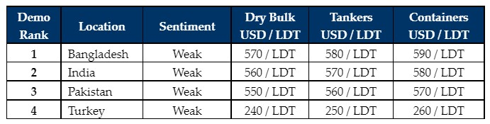

inWeekly Demolition Reports08/08/2022

Sub-continent markets are going to be (seemingly) deprived of tonnage in the foreseeable future, as recycling rates continue their downward descent and tighter restrictions are placed on importing large LDT tonnage into Bangladesh and now Pakistan (with limits on large US$ value L/Cs).
Firm chartering freight rates across the board are also seeing Ship Owners preferring to maintain their vessels for further voyages, rather than deal with the ongoing headaches associated with present day sub-continent recycling (despite seeing some of the firmest recycling rates in a while), all the challenges currently associated with questionable performances and a shortage of local funds to have L/Cs open in a timely manner.
Any vessel(s) already in Cash Buyer hands are now threatened with unworkable levels and delivery terms from various markets and it now seems that almost every ship sold for recycling will have to turn to trading markets as an alternative, so lifeless is the ship-recycling industry at present.
It is also a traditionally quieter period being summer / monsoon season / holiday period, not only in the sub-continent markets that are beset with torrential monsoon rains and see most yards slowdown as labourers return to their home towns, but it’s also the time of year when Ship Owners and Brokers head out on holidays (particularly after missing out for the last few years due to Covid).
On the far end, the Turkish market continues to stagnate through its predicament, with no noteworthy change to report this week and slightly lower levels from last.
As such, with dire fundamentals and little to no firm tonnage available in the market to work on, it seems set to be an extremely bleak few weeks / month(s) – perhaps even until the end of the year, whilst recycling markets get a chance to reset & stabilize and allow larger value transactions before the next cycle of ship recycling starts again.
For week 31 of 2022, GMS demo rankings / pricing for the week are as below.

📄 Download PDF: Ship-recycling-market-insight-week-31-2022-No-Go.pdfSource: GMS,Inc. ,https://www.gmsinc.net/gms_new/index.php/web